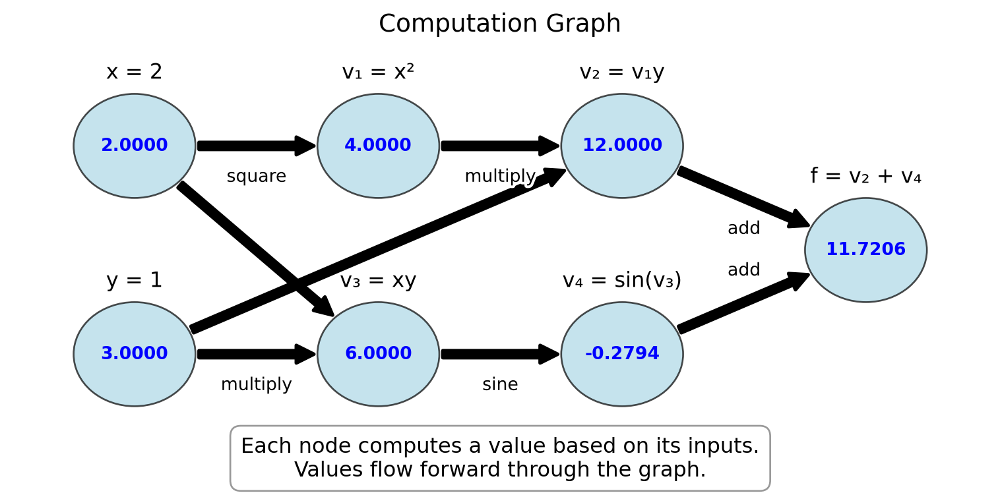
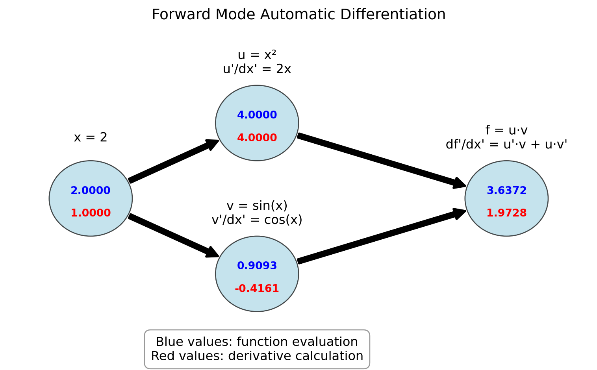
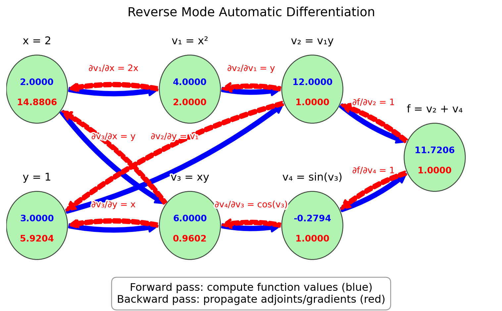

Appendix D — Automatic Differentiation
In Chapter 5, we explored numerical differentiation through finite difference methods. These methods approximate derivatives by evaluating the function at different points and calculating differences. While straightforward to implement, they suffer from two main limitations:
- Truncation error: As we’ve seen, the error scales with some power of the step size \(h\)
- Round-off error: As \(h\) gets extremely small, floating-point arithmetic leads to precision loss
Automatic differentiation (AD) is a different approach that computes derivatives exactly (to machine precision) without relying on finite differences. AD leverages the chain rule and the fact that all computer programs, no matter how complex, ultimately break down into elementary operations (addition, multiplication, sin, exp, etc.) whose derivatives are known.
Let’s introduce the concept of a computation graph, which is fundamental to understanding automatic differentiation.
A computation graph represents a mathematical function as a directed graph where:
- Nodes represent variables (inputs, outputs, or intermediate values)
- Edges represent dependencies between variables
- Each node performs a simple operation with known derivatives
Example D.1 Consider the function \(f(x, y) = x^2y + \sin(xy)\). We can break this down into elementary operations and visualize it as a computation graph:
This computation graph for \(f(x,y) = x^2y + \sin(xy)\) at \((x,y) = (2,3)\) shows:
- Input nodes: \(x = 2\), \(y = 3\)
- Intermediate computations:
- \(v_1 = x^2 = 4\)
- \(v_3 = xy = 6\)
- \(v_2 = v_1y = 12\)
- \(v_4 = \sin(v_3) = \sin(6) \approx -0.2794\)
- Output node: \(f = v_2 + v_4 = 12 + (-0.2794) \approx 11.7206\)
For each operation in the computation graph, we know:
- How to compute the function value (forward evaluation)
- How to compute the derivative of the operation with respect to its inputs
The computation graph is the foundation for automatic differentiation:
- Forward mode AD: Derivatives flow through the graph in the same direction as function evaluation
- Reverse mode AD: Function values flow forward through the graph, derivatives flow backward
This will become clearer in sections Section D.1 and Section D.2.
Exercise D.1 🖋 💬 1. Draw the computation graph for the function \(f(x) = x^2\sin(x)\).
- For the function \(h(x,y,z) = xy + yz + zx\), identify:
- The input nodes
- The intermediate nodes and their operations
- The output node
- Explain why breaking a complex function into a computation graph of elementary operations is useful for derivative computation.
D.1 Forward Mode AD
In forward mode automatic differentiation, we track both the values of variables and their derivatives with respect to the input variables. This allows us to build the derivatives as we compute the function value.
Example D.2 Consider a simple function \(f(x) = x^2 \cdot \sin(x)\). We can compute both the value and the derivative at \(x = 2\) as follows:
Initialize: \(x = 2\), \(\frac{dx}{dx} = 1\) (The derivative of \(x\) with respect to itself is 1)
Compute \(u = x^2\):
- Value: \(u = 2^2 = 4\)
- Derivative: \(\frac{du}{dx} = \frac{d(x^2)}{dx} \cdot \frac{dx}{dx} = 2x \cdot 1 = 2 \cdot 2 = 4\)
Compute \(v = \sin(x)\):
- Value: \(v = \sin(2) \approx 0.9093\)
- Derivative: \(\frac{dv}{dx} = \frac{d\sin(x)}{dx} \cdot \frac{dx}{dx} = \cos(x) \cdot 1 = \cos(2) \approx -0.4161\)
Compute \(f = u \cdot v\):
- Value: \(f = 4 \cdot 0.9093 \approx 3.6372\)
- Derivative: \(\frac{df}{dx} = \frac{d(u \cdot v)}{dx} = \frac{du}{dx} \cdot v + u \cdot \frac{dv}{dx} = 4 \cdot 0.9093 + 4 \cdot (-0.4161) \approx 1.9728\)
This is forward mode automatic differentiation.
The figure below illustrates the computational graph for \(f(x) = x^2 \cdot \sin(x)\) with forward mode AD. The blue values show the function evaluation, while the red values show the derivative calculation:
Code
import matplotlib.pyplot as plt
import numpy as np
from matplotlib.patches import Rectangle, FancyArrowPatch, Circle
import matplotlib.patheffects as path_effects
# Create figure and axis
fig, ax = plt.subplots(figsize=(8, 5))
# Function to create a node
def create_node(ax, x, y, value, deriv, label, r=0.5):
# Create circle
circle = Circle((x, y), r, facecolor='lightblue', edgecolor='black', alpha=0.7)
ax.add_patch(circle)
# Add text for value and derivative
ax.text(x, y+0.1, f"{value:.4f}", ha='center', va='center', fontweight='bold', color='blue')
ax.text(x, y-0.2, f"{deriv:.4f}", ha='center', va='center', fontweight='bold', color='red')
# Add label
text = ax.text(x, y+r+0.3, label, ha='center', va='center', fontsize=12)
text.set_path_effects([path_effects.withStroke(linewidth=3, foreground='white')])
return (x, y)
# Function to create an arrow
def create_arrow(ax, start, end, label=""):
# Adjust start/end points to be at edges of nodes
start_x, start_y = start
end_x, end_y = end
r = 0.5 # Node radius
# Calculate vector between centers
dx = end_x - start_x
dy = end_y - start_y
dist = np.sqrt(dx*dx + dy*dy)
# Adjust start/end points to be at node edges
start = (start_x + r*dx/dist, start_y + r*dy/dist)
end = (end_x - r*dx/dist, end_y - r*dy/dist)
arrow = FancyArrowPatch(start, end, connectionstyle="arc3,rad=0",
arrowstyle="simple", mutation_scale=20,
linewidth=2, color='black')
ax.add_patch(arrow)
# Add label to arrow
if label:
mid_x = (start[0] + end[0]) / 2
mid_y = (start[1] + end[1]) / 2
# Offset the label position slightly
offset_x = -0.5 if start[0] < end[0] else -0.3
offset_y = 0.3 if start[1] < end[1] else -0.3
text = ax.text(mid_x + offset_x, mid_y + offset_y, label, ha='center', va='center', fontsize=10)
text.set_path_effects([path_effects.withStroke(linewidth=3, foreground='white')])
# Create nodes
input_node = create_node(ax, 1, 4, 2.0, 1.0, "x = 2")
squared_node = create_node(ax, 3, 5, 4.0, 4.0, "u = x²\nu'/dx' = 2x")
sin_node = create_node(ax, 3, 3, 0.9093, -0.4161, "v = sin(x)\nv'/dx' = cos(x)")
output_node = create_node(ax, 6, 4, 3.6372, 1.9728, "f = u·v\ndf'/dx' = u'·v + u·v'")
# Create arrows
create_arrow(ax, input_node, squared_node)
create_arrow(ax, input_node, sin_node)
create_arrow(ax, squared_node, output_node)
create_arrow(ax, sin_node, output_node)
# Set limits and remove axis
ax.set_xlim(0, 7)
ax.set_ylim(2, 6.3)
ax.axis('off')
# Add title and explanation
plt.title("Forward Mode Automatic Differentiation", fontsize=14)
ax.text(3, 2, "Blue values: function evaluation\nRed values: derivative calculation",
ha='center', va='center', fontsize=12,
bbox=dict(facecolor='white', alpha=0.8, edgecolor='gray', boxstyle='round,pad=0.5'))
plt.tight_layout()
plt.show()
Let’s formalize the forward mode automatic differentiation process by creating a systematic approach. We’ll use the concept of a “dual number” that carries both a value and its derivative.
We will represent each variable as a pair \(\begin{pmatrix} v \\ d \end{pmatrix}\) where \(v\) is the variable’s value and \(d\) is its derivative with respect to the input we’re differentiating against.
Consider these basic operations and their dual number representations:
Addition: \(\begin{pmatrix} a \\ a' \end{pmatrix} + \begin{pmatrix} b \\ b' \end{pmatrix} = \begin{pmatrix} a + b \\ a' + b' \end{pmatrix}\)
Multiplication: \(\begin{pmatrix} a \\ a' \end{pmatrix} \cdot \begin{pmatrix} b \\ b' \end{pmatrix} = \begin{pmatrix} a \cdot b \\ a' \cdot b + a \cdot b' \end{pmatrix}\)
Division: \(\begin{pmatrix} a \\ a' \end{pmatrix} / \begin{pmatrix} b \\ b' \end{pmatrix} = \begin{pmatrix} a/b \\ (a' \cdot b - a \cdot b')/b^2 \end{pmatrix}\)
Power: \(\begin{pmatrix} a \\ a' \end{pmatrix}^n = \begin{pmatrix} a^n \\ n \cdot a^{n-1} \cdot a' \end{pmatrix}\)
Sine: \(\sin\begin{pmatrix} a \\ a' \end{pmatrix} = \begin{pmatrix} \sin(a) \\ \cos(a) \cdot a' \end{pmatrix}\)
Exponential: \(e^{\begin{pmatrix} a \\ a' \end{pmatrix}} = \begin{pmatrix} e^a \\ e^a \cdot a' \end{pmatrix}\)
With this notation the calculations from Example D.2 can be written as:
\[ \begin{split} \begin{pmatrix} x \\ x' \end{pmatrix} &= \begin{pmatrix} 2 \\ 1 \end{pmatrix} \\ \begin{pmatrix} u \\ u' \end{pmatrix} &= \begin{pmatrix} x \\ x' \end{pmatrix}^2 = \begin{pmatrix} x^2 \\ 2xx' \end{pmatrix} = \begin{pmatrix} 4 \\ 4 \end{pmatrix} \\ \begin{pmatrix} v \\ v' \end{pmatrix} &= \sin\begin{pmatrix} x \\ x' \end{pmatrix}=\begin{pmatrix} \sin(x) \\ \cos(x)x' \end{pmatrix} = \begin{pmatrix} 0.9093 \\ -0.4161 \end{pmatrix} \\ \begin{pmatrix} f \\ f' \end{pmatrix} &= \begin{pmatrix} u \\ u' \end{pmatrix} \cdot \begin{pmatrix} v \\ v' \end{pmatrix} = \begin{pmatrix} u \cdot v \\ u' \cdot v + u \cdot v' \end{pmatrix} = \begin{pmatrix} 3.6372 \\ 1.9728 \end{pmatrix} \end{split} \]
Exercise D.2 🖋 💻 Compute the derivative of using the dual number approach:
- \(f(x) = \frac{x^2 + 1}{2x - 3}\) at \(x = 2\)
Verify your result by computing the derivative analytically and comparing.
Next let us teach Python how to do this.
import numpy as np
# Basic operations on dual numbers represented as tuples (value, derivative)
def dual_add(a, b):
"""Add two dual numbers: (a, a') + (b, b') = (a + b, a' + b')"""
return (a[0] + b[0], a[1] + b[1])
def dual_multiply(a, b):
"""Multiply two dual numbers: (a, a') * (b, b') = (a*b, a'*b + a*b')"""
return (a[0] * b[0], a[1] * b[0] + a[0] * b[1])
def dual_divide(a, b):
"""Divide two dual numbers: (a, a') / (b, b') = (a/b, (a'*b - a*b')/b^2)"""
return (a[0] / b[0], (a[1] * b[0] - a[0] * b[1]) / (b[0] * b[0]))
def dual_power(a, n):
"""Raise dual number to integer power n: (a, a')^n = (a^n, n*a^(n-1)*a')"""
return (a[0]**n, n * a[0]**(n-1) * a[1])
def dual_sin(a):
"""Sine of dual number: sin(a, a') = (sin(a), cos(a)*a')"""
return (np.sin(a[0]), np.cos(a[0]) * a[1])
def dual_exp(a):
"""Exponential of dual number: e^(a, a') = (e^a, e^a*a')"""
exp_a = np.exp(a[0])
return (exp_a, exp_a * a[1])# Example usage
x = (2, 1)
u = dual_power(x, 2)
v = dual_sin(x)
f = dual_multiply(u, v)
print(f)(np.float64(3.637189707302727), np.float64(1.9726023611141572))# Example usage
x = (2, 1)
f = dual_multiply(dual_power(x, 2), dual_sin(x))
print(f)(np.float64(3.637189707302727), np.float64(1.9726023611141572))For multivariate functions, we can compute one directional derivative at a time.
For a function \(f(x, y)\), to compute \(\frac{\partial f}{\partial x}\), we initialize:
- \(x = \begin{pmatrix} x \\ 1 \end{pmatrix}\) (value and derivative of \(x\) with respect to \(x\))
- \(y = \begin{pmatrix} y \\ 0 \end{pmatrix}\) (value and derivative of \(y\) with respect to \(x\))
And to compute \(\frac{\partial f}{\partial y}\), we initialize:
- \(x = \begin{pmatrix} x \\ 0 \end{pmatrix}\) (value and derivative of \(x\) with respect to \(y\))
- \(y = \begin{pmatrix} y \\ 1 \end{pmatrix}\) (value and derivative of \(y\) with respect to \(y\))
Exercise D.3 🖋 💻 1. For \(f(x, y) = x^2y + \sin(xy)\), compute both \(\frac{\partial f}{\partial x}\) and \(\frac{\partial f}{\partial y}\) at \((x, y) = (2, 1)\) using forward mode AD with the dual number approach.
For \(f(x, y, z) = x^2 y + y\sin(z) + z\cos(x)\), compute \(\frac{\partial f}{\partial x}\), \(\frac{\partial f}{\partial y}\), and \(\frac{\partial f}{\partial z}\) at \((x, y, z) = (1, 1, 1)\).
If a function has \(n\) inputs and we want all partial derivatives, how many forward mode passes do we need? What implications does this have for functions with many inputs?
D.2 Reverse Mode AD
Now let’s explore reverse mode automatic differentiation, which is more efficient for functions with many inputs and few outputs. Reverse mode AD first computes the function value and then propagates derivatives backward from the output to the inputs.
For this exercise, we’ll introduce the concept of adjoints or accumulated gradients. The adjoint of a variable \(v\) is denoted \(\overline{v}\) and represents \(\frac{\partial f}{\partial v}\) where \(f\) is the final output.
Example D.3 Let’s trace through the reverse mode process for \(f(x, y) = x^2y + \sin(xy)\) at \((x, y) = (2, 3)\):
Define intermediate variables in the computation graph as in Figure D.1:
- \(v_1 = x^2 = 4\)
- \(v_2 = v_1 \cdot y = 4 \cdot 3 = 12\)
- \(v_3 = x \cdot y = 2 \cdot 3 = 6\)
- \(v_4 = \sin(v_3) = \sin(6) \approx -0.2794\)
- \(f = v_2 + v_4 = 12 + (-0.2794) \approx 11.7206\) (final output)
Initialize the adjoint of the output: \(\overline{f} = 1\)
Propagate adjoints backward using the chain rule:
- \(\overline{v_4} = \overline{f} \cdot \frac{\partial f}{\partial v_4} = 1 \cdot 1 = 1\)
- \(\overline{v_3} = \overline{v_4} \cdot \frac{\partial v_4}{\partial v_3} = 1 \cdot \cos(v_3) = \cos(6) \approx 0.9602\)
- \(\overline{v_2} = \overline{v_5} \cdot \frac{\partial f}{\partial v_2} = 1 \cdot 1 = 1\)
- \(\overline{v_1} = \overline{v_2} \cdot \frac{\partial v_2}{\partial v_1} = 1 \cdot y = 3\)
- \(\overline{x} = \overline{v_1} \cdot \frac{\partial v_1}{\partial x} + \overline{v_3} \cdot \frac{\partial v_3}{\partial y} = 3 \cdot 2x + 0.9602 \cdot y = 3 \cdot 2 \cdot 2 + 0.9602 \cdot 3 \approx 14.8806\)
- \(\overline{y} = \overline{v_2} \cdot \frac{\partial v_2}{\partial y} + \overline{v_3} \cdot \frac{\partial v_3}{\partial y} = 1 \cdot v_1 + 0.9602 \cdot x = 1 \cdot 4 + 0.9602 \cdot 2 \approx 5.9204\)
The final results are \(\frac{\partial f}{\partial x} = \overline{x} \approx 14.8806\) and \(\frac{\partial f}{\partial y} = \overline{y} \approx 5.9204\)
Figure D.3 illustrates the reverse mode AD computation graph for this example.
Code
import matplotlib.pyplot as plt
import numpy as np
from matplotlib.patches import Rectangle, FancyArrowPatch, Circle
import matplotlib.patheffects as path_effects
# Create figure and axis
fig, ax = plt.subplots(figsize=(8, 5))
# Function to create a node
def create_node(ax, x, y, value, adjoint, label, r=0.5):
# Create circle
circle = Circle((x, y), r, facecolor='lightgreen', edgecolor='black', alpha=0.7)
ax.add_patch(circle)
# Add text for value and adjoint
ax.text(x, y+0.1, f"{value:.4f}", ha='center', va='center', fontweight='bold', color='blue')
ax.text(x, y-0.2, f"{adjoint:.4f}", ha='center', va='center', fontweight='bold', color='red')
# Add label
text = ax.text(x, y+r+0.2, label, ha='center', va='center', fontsize=12)
text.set_path_effects([path_effects.withStroke(linewidth=3, foreground='white')])
return (x, y)
# Function to create an arrow for forward pass
def create_forward_arrow(ax, start, end, label=""):
# Adjust start/end points to be at edges of nodes
start_x, start_y = start
end_x, end_y = end
r = 0.5 # Node radius
# Calculate vector between centers
dx = end_x - start_x
dy = end_y - start_y
dist = np.sqrt(dx*dx + dy*dy)
# Adjust start/end points to be at node edges
start = (start_x + r*dx/dist, start_y + r*dy/dist)
end = (end_x - r*dx/dist, end_y - r*dy/dist)
arrow = FancyArrowPatch(start, end, connectionstyle="arc3,rad=0.1",
arrowstyle="simple", mutation_scale=20,
linewidth=2, color='blue')
ax.add_patch(arrow)
# Add label to arrow
if label:
mid_x = (start[0] + end[0]) / 2
mid_y = (start[1] + end[1]) / 2
# Offset the label position slightly
offset_x = 0.3 if start[0] < end[0] else -0.3
offset_y = 0.3 if start[1] < end[1] else -0.3
text = ax.text(mid_x + offset_x, mid_y + offset_y, label, ha='center', va='center', fontsize=10, color='blue')
text.set_path_effects([path_effects.withStroke(linewidth=3, foreground='white')])
# Function to create an arrow for backward pass
def create_backward_arrow(ax, start, end, label=""):
# Adjust start/end points to be at edges of nodes
start_x, start_y = start
end_x, end_y = end
r = 0.5 # Node radius
# Calculate vector between centers
dx = end_x - start_x
dy = end_y - start_y
dist = np.sqrt(dx*dx + dy*dy)
# Adjust start/end points to be at node edges
start = (start_x + r*dx/dist, start_y + r*dy/dist)
end = (end_x - r*dx/dist, end_y - r*dy/dist)
arrow = FancyArrowPatch(start, end, connectionstyle="arc3,rad=0.1",
arrowstyle="simple", mutation_scale=20,
linewidth=2, color='red', linestyle='--')
ax.add_patch(arrow)
# Add label to arrow
if label:
mid_x = (start[0] + end[0]) / 2
mid_y = (start[1] + end[1]) / 2
# Offset the label position slightly
offset_x = -0 if end[0] < start[0] else -0.3
offset_y = 0.3 if end[1] < start[1] else 0.3
text = ax.text(mid_x + offset_x, mid_y + offset_y, label, ha='center', va='center', fontsize=10, color='red')
text.set_path_effects([path_effects.withStroke(linewidth=3, foreground='white')])
# Create nodes
x_node = create_node(ax, 0.5, 4, 2, 14.8806, "x = 2")
y_node = create_node(ax, 0.5, 2, 3, 5.9204, "y = 1")
x_squared_node = create_node(ax, 3, 4, 4, 2, "v₁ = x²")
xy_node = create_node(ax, 3, 2, 6, 0.9602, "v₃ = xy")
x_squared_y_node = create_node(ax, 5, 4, 12, 1, "v₂ = v₁y")
sin_xy_node = create_node(ax, 5, 2, -0.2794, 1, "v₄ = sin(v₃)")
output_node = create_node(ax, 7, 3, 11.7206, 1, "f = v₂ + v₄")
# Create forward pass arrows
create_forward_arrow(ax, x_node, x_squared_node)
create_forward_arrow(ax, x_node, xy_node)
create_forward_arrow(ax, y_node, xy_node)
create_forward_arrow(ax, y_node, x_squared_y_node)
create_forward_arrow(ax, x_squared_node, x_squared_y_node)
create_forward_arrow(ax, xy_node, sin_xy_node)
create_forward_arrow(ax, x_squared_y_node, output_node)
create_forward_arrow(ax, sin_xy_node, output_node)
# Create backward pass arrows
create_backward_arrow(ax, output_node, x_squared_y_node, "∂f/∂v₂ = 1")
create_backward_arrow(ax, output_node, sin_xy_node, "∂f/∂v₄ = 1")
create_backward_arrow(ax, sin_xy_node, xy_node, "∂v₄/∂v₃ = cos(v₃)")
create_backward_arrow(ax, x_squared_y_node, x_squared_node, "∂v₂/∂v₁ = y")
create_backward_arrow(ax, x_squared_y_node, y_node, "∂v₂/∂y = v₁")
create_backward_arrow(ax, xy_node, x_node, "∂v₃/∂x = y")
create_backward_arrow(ax, xy_node, y_node, "∂v₃/∂y = x")
create_backward_arrow(ax, x_squared_node, x_node, "∂v₁/∂x = 2x")
# Set limits and remove axis
ax.set_xlim(0, 8)
ax.set_ylim(1, 5)
ax.axis('off')
# Add title and explanation
plt.title("Reverse Mode Automatic Differentiation", fontsize=14)
ax.text(4, 1, "Forward pass: compute function values (blue)\nBackward pass: propagate adjoints/gradients (red)",
ha='center', va='center', fontsize=12,
bbox=dict(facecolor='white', alpha=0.8, edgecolor='gray', boxstyle='round,pad=0.5'))
plt.tight_layout()
plt.show()
Exercise D.4 🖋 💬 Trace through the reverse mode process for:
\(f(x, y) = e^{xy}\) at \((x, y) = (0, 1)\).
💻 \(f(x)=xy^2\cos(xy^2)\) at \((x, y) = (\pi, 3)\).
\(f(x, y, z) = x^2 + y^2 + z^2 + xy + yz + xz\) at \((x, y, z) = (1, 1, 1)\).
Let’s now look at how to use JAX, a library that provides automatic differentiation in Python. JAX is designed to be simple to use while providing powerful capabilities. Unlike our finite-difference methods that had truncation errors, JAX computes the derivative exactly (to machine precision).
Example D.4 Here’s a simple example using JAX to compute derivatives:
import jax
import jax.numpy as jnp
# Define a function
def f(x):
return jnp.sin(x) * (1 - x)
# Compute the derivative function
df = jax.grad(f)
# Evaluate at x = 1
print(f"f(1) = {f(1)}")
print(f"f'(1) = {df(1.0)}")Two things to note:
- We had to use the jax versions of NumPy functions, like
jnp.sininstead ofnp.sin. - We had to pass a float to the
dffunction, rather than an integer. So we had to writedf(1.0)instead ofdf(1).
Exercise D.5 Use JAX to compute the derivatives of:
\(f(x) = x^3 - 2x^2 + 4x - 7\)
\(f(x) = \sin(x) \exp(x)\)
\(f(x) = \frac{x^2 + 1}{2x - 3}\)
Check that you get the same results as in Exercise D.2.
Example D.5 For multivariate functions, JAX allows us to compute partial derivatives:
def g(x, y):
return x**2 * y + jnp.sin(x * y)
# Compute partial with respect to first argument (x)
dg_dx = jax.grad(g, argnums=0)
# Compute partial with respect to second argument (y)
dg_dy = jax.grad(g, argnums=1)
# Evaluate at (2, 1)
print(f"∂g/∂x at (2,1) = {dg_dx(2.0, 1.0)}")
print(f"∂g/∂y at (2,1) = {dg_dy(2.0, 1.0)}")Exercise D.6 💻 Use this approach to compute the partial derivatives of:
\(f(x, y) = x\exp(y+x) + y\sin(xy)\)
\(f(x, y, z) = x^2y + y\sin(z) + z\cos(x)\)
JAX can also compute higher-order derivatives:
# Second derivative
d2f = jax.grad(jax.grad(f))
print(f"f''(1) = {d2f(1.0)}")
# Or more concisely
d2f = jax.hessian(f)
print(f"f''(1) = {d2f(1.0)}")Exercise D.7 💻 💬 Compare the accuracy and efficiency of the differentiation methods we’ve studied:
For the function \(f(x) = \sin(x)(1 - x)\), compute the derivative at \(x = 1\) using:
Forward difference with step sizes \(h = 0.1, 0.01, 0.001\)
Central difference with step sizes \(h = 0.1, 0.01, 0.001\)
JAX automatic differentiation
Create a table giving the value of the derivative and the absolute error for each of these 7 cases.
D.3 Algorithm Summaries
Exercise D.8 💬 Explain how to define arithmetic operations on dual numbers and how to use them to compute the derivative of a function with forward mode automatic differentiation.
Exercise D.9 💬 Given a computation graph of a function, explain how to accumulate the gradients in a backwards pass through the computation graph. What is the advantage of this method over forward mode automatic differentiation?